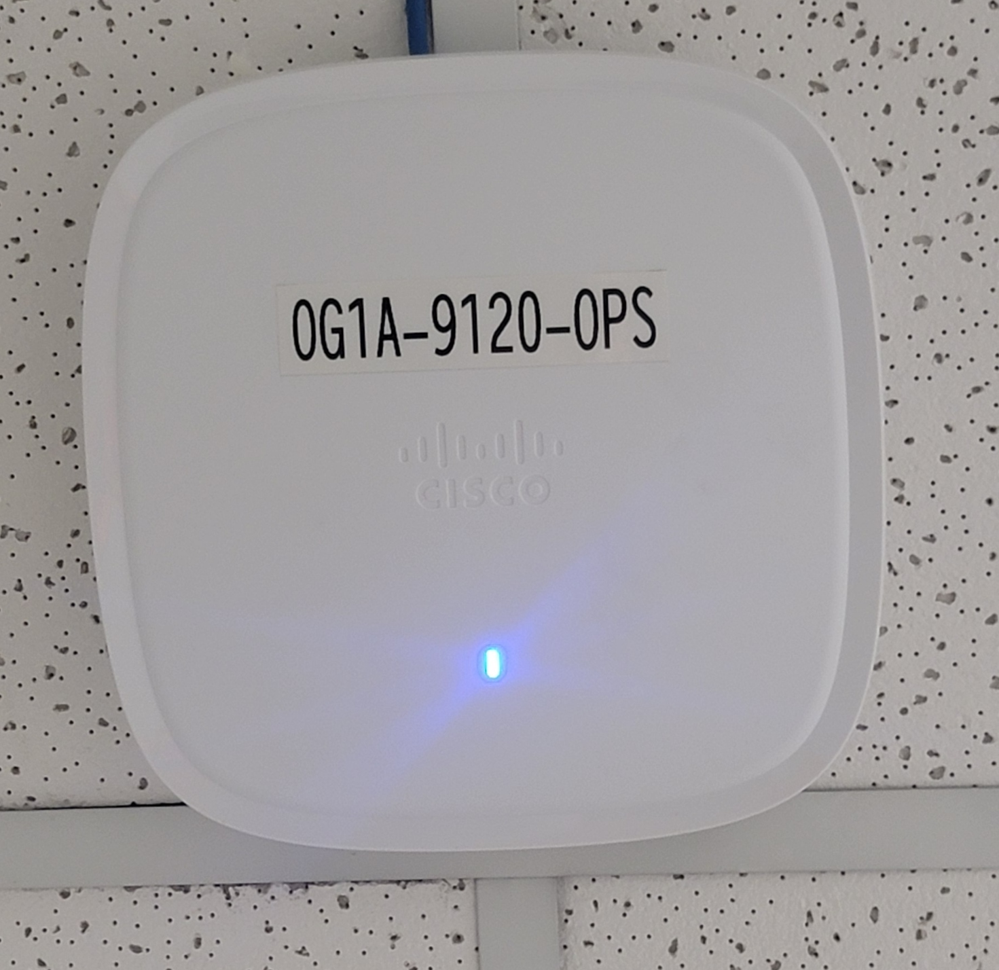

Devices that allow wireless devices to connect to a wired network using Wi-Fi or related standards.
Access points (APs) are networking hardware devices that allow Wi-Fi devices to connect to a wired network. They act as a bridge between the wireless devices and the wired network, enabling communication and data transfer. Access points are commonly used in homes, offices, and public spaces to provide wireless internet access.
This AP is located at the Mt. Ogden UTA Business Unit
To learn more about UTA please visit UTA's official website.